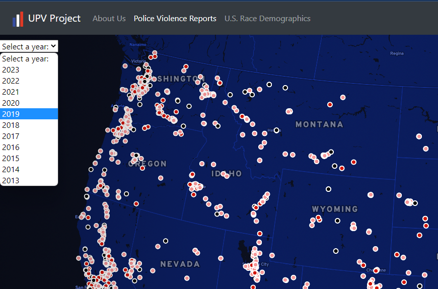
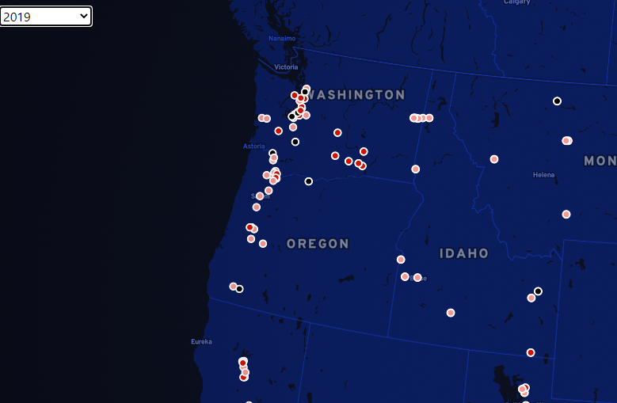
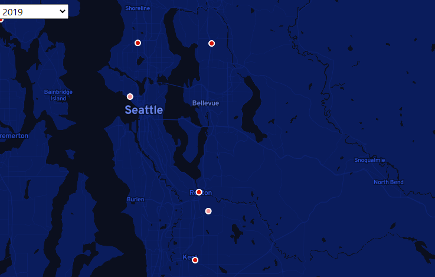
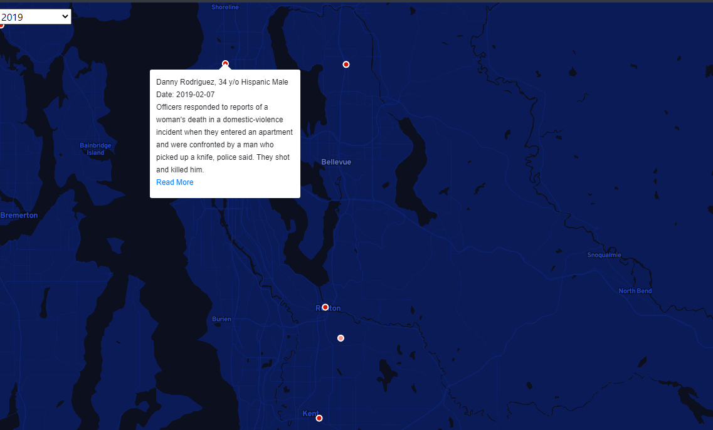

U.S. Police Violence Web Map
Since 2013, many people of all races, genders, and walks of life have rallied around the sweeping American social movement known as Black Lives Matter. Originally stemming from protest against excessive use of force predominantly targeting Black men by police officers around the United States, community members would take to the streets not only to communicate their dissatisfaction with policing in the United States, but also to memorialize the victims of these extreme uses of force.
The main focus of this project is to bring back attention to the individual lives that are being taken through police violence. The main feature of this map is to show the exact locations of police violence reports since the beginning of the BLM movement. Users are able to click on the points on the map to see the names, races, and ages of victims of police violence. And if the reader chooses, they may follow a link to a local news article about the police violence report.
While we do want to focus more on the individual, it is still very important to preserve the part of police reform movements that are pointing out disparities in how policing is done. To do this we are also including statistics for the racial makeup of each state accoording to the American Community Survey, and we are providing a bar chart that shows the racial statistics of all of the instances of police violence on the screen. These two tools in tandem will allow the user to better understand the disparities in policing in the United States.
Violence Report Map Usage Guide
The amount of information on the map may be slightly daunting at first since it shows all 10 years worth of violence reports at once. Users can filter the data points by year using the dropdown in the top left corner (displayed above).
As you can see, looking at an individual year makes viewing the data much more managable. From here we can use the mouse scroll wheel to zoom in on an area of interest.
Once the user finds the area of interest, they can use their mouse to click on a point and explore the details of the data associated with said point. When the user clicks, a popup will appear on the map showing demographic details of the victim and a brief description of the violence report. If the user would like even further details, they can follow the "Read More" link to open an associated news report in a new tab.
Data Sources
- Methods
The ACS data is a collection of individual observations with multiple attributes to describe an individual taking the survey. These survey results were compiled into proportional demographic data using a simple R script. These data are then used to make a fill type Mapbox layer.
The data from Mapping Police Violence was already very clean, so the data was usable without any sort of heavy duty processing requirements. Points on the map were frawn with a Mapbox layer using the latitude and longitude fields in the dataset. All demographic and individual data for that point is also taken directly from the data table and formatted into a Mapbox popup for viewing when the reader clicks on a point.
United States racial demographic data was pulled from the annual American Community Survey, which is a 1% sample of the US population taken every year. A clean compiled set of this data was acquired through IPUMS USA.
Police Violence report data was acquired from the Mapping Police Violence website. The site has many great info graphics and statistics on police violence in the US, as well as a collection of specific police violence reports.
Credits
Several libaries were used to produce this website: Bootstrap, FontAwesome, Google Fonts. Our data was displayed on our map using Mapbox API developed in JavaScript.